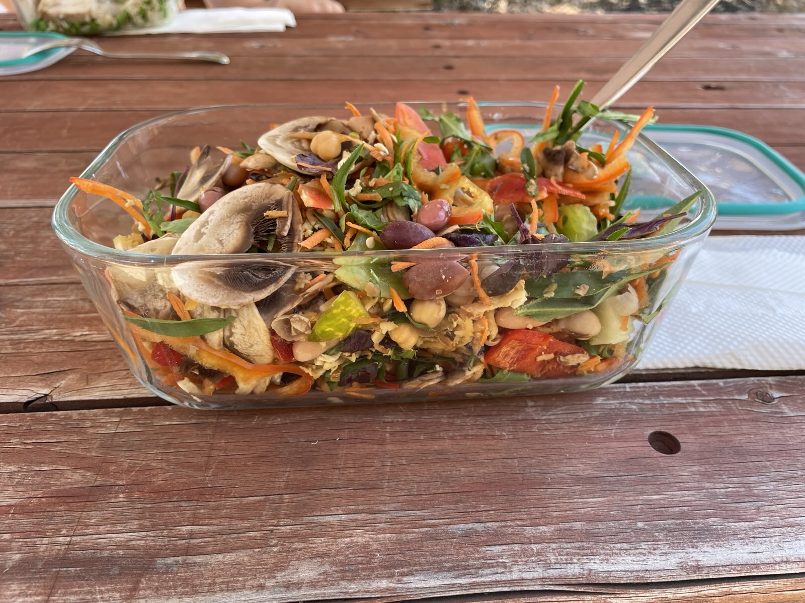

Briscoe's "Bucket of Vegetables" Salad

This is a salad invented by Briscoe to include a lot of vegetables as well as beans and tofu.
The idea behind the salad is to have an easy to meal-prep meal that keeps acceptably well in the fridge for up to 8 days. The recommended approach is to make the salad in bulk on a Saturday or Sunday, and then portion the salad out over each weekday. This typically yield about 6 regular portions, or 5 heavy portions.
The beauty of this recipe is that you can use nearly any vegetables that you like or have to use up. It is really that versatile. Unfortunately, however, it does not taste very good.
Ingredients
- 120g bag of rocket lettuce
- 4x ripe tomatoes
- 3x continental cucumbers
- 3x red or green capsicums
- 3x carrots
- 2x cans of chickpeas, drained and rinsed
- 2x cans of 4 bean medley, drained and rinsed
- 1x block of hard tofu (650g)
- 1x jar of pitted olives (green or black)
- Any other vegetables that need to be used up
Steps
- Preheat the oven to 180 degrees C.
- Grate the tofu using the large grate on a box grater or foot processor.
- Microwave the tofu for approximately 5-7 minutes, to steam moisture from the tofu and promote crisping. When it is done, transfer to the oven and bake for about 30 minutes, or until crispy.
- While the tofu is steaming, wash all your vegetables.
- Grate your carrot using the small grate on a box grater or food processor.
- Dice (or finely slice using a food processor) the cucumber, tomatoes and capsicum.
- Mix through the bag of rocket with the cut vegetables.
- Mix through the canned beans, chickpeas and olives with the vegetables.
- Remove the tofu from the oven and allow to cool.
- Mix through the tofu with the vegetables.
- Pack away in meal prep containers.
- Do the washing up.
Home